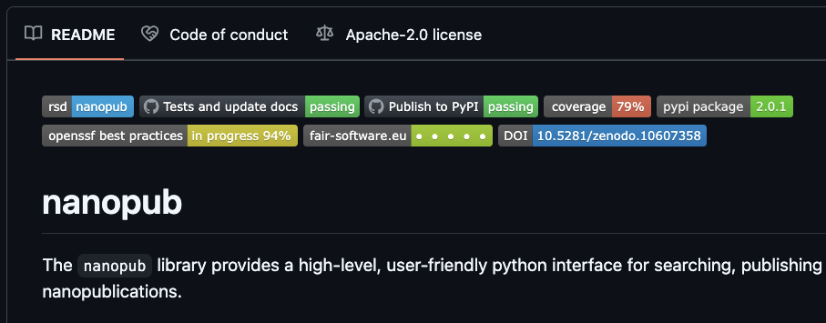

Document your research software
Last updated on 2025-03-12 | Edit this page
Estimated time: 55 minutes
Overview
Questions
- What different types of documentation are there?
- How to help others to use your project?
- What are docstrings and what information should go into docstrings?
- What different tools exist for generating documentation?
Objectives
- Know what makes a good documentation
- Know how to document your project and get credit for your work
- Learn what docstrings are and how to use them
- Learn what tools can be used for generating documentation
- Implement MkDocs to generate comprehensive project documentation
Use these slides as a guidance.
The main purpose of this lesson is to make sure participants understand that DOCUMENTATION IS IMPORTANT. The goal is more to trigger participants then to teach them all the different ways one could document a project. It is good to communicate this (and that this will give more time for the other parts of the workshop).
Why we teach this lesson
Specific motivations:
- Code documentation should be part of your source code so that it remains easily accessible and maintainable for all users.
- Good documentation allows others to install and make use of your code independently and increase the impact of your project.
- Documentation can facilitate collaborations by helping us onboard new project members quickly and more easily.
- By writing documention you think about the design of your code.
What makes a good documentation?
Exercise: Think of good and bad examples
Write down your thoughts in the collaborative documents. Respond with emojis üëç üôÄ to your colleagues‚Äô answers. - Think of projects of which you like the documentation. What do you like about them? - Think of projects for which you don‚Äôt like the documentation. What don‚Äôt you like about them? Are you missing anything?
NB: You can choose a mature library with lots of users for this exercise, but try to also think of less mature projects you had to collaborate on, or papers you had to reproduce.
- It is important to document code
- Think about the people reading your documentation (your audience)
- Depending on the purpose and state of the project documentation needs to meet different criteria. 
- For most scientific projects, in-code documentation and a well thought out README file is enough.
- Documentation should be tracked with corresponding code
Types of documentation
There are different types of documentation:
- README and CITATION files
- in-code documentation (comments and docstrings)
- Tutorials
Writing good README files
The README file is the first thing a user/collaborator sees. It should include:
- A descriptive project title
- Motivation (why the project exists)
- How to setup
- Copy-pastable quick start code example
- Link or instructions for contributing
- Badges
- Citation
Badges
Badges are a way to quickly show the status of a project: is it building, is it tested, what is the license? You typically find them on top of the README file:
.
Draft or improve a README for one of your recent projects (in breakout rooms)
Try to draft a brief README or review a README which you have written for one of your projects. You can work individually, but you could also discuss whether anything can be improved on your neighbour’s README file(s). Think about the user (which can be a future you) of your project, what does this user need to know to use or contribute to the project? And how do you make your project attractive to use or contribute to?
Add a badge
Add a badge to your README file. This comes down to simply adding a link to an image on top of your README file.
You can pick from:
- A simple static badge. You can decide what it says and what color it is.
- The howfairis badge. It indicates whether a project is in line with the FAIR software recommendations.
- A badge reporting test coverage (we will discuss testing and continuous integration in upcoming episodes)
- A badge linking to a publication in Zenodo
- A badge showing the license
(optional) Make your writing bold and clear
Try the https://hemingwayapp.com/ to analyse your README file and make your writing bold and clear.
Citation
It is easy to correctly cite a paper: all the necessary information (metadata) can be found on the title page or the article website.
Software and datasets have no title page, the relevant information is often less obvious. To get credit for your work, you should provide citation information for your software.
A good way to add citation information is by including a CITATION.cff file (Citation File Format) in the root of your repository. This plain text file, written in YAML format, contains all the necessary citation details in a structured manner.
Platforms like GitHub, Zenodo, and Zotero reuse the citation metadata you provide. GitHub, for example, automatically renders the file on the repository landing page and provides a BibTeX snippet which users can simply copy!
Minimal example for a CITATION.cff file
YAML
authors:
- family-names: Doe
given-names: John
cff-version: 1.2.0
message: "If you use this software, please cite it using the metadata from this file."
title: "My research software"We can also include other important information of software such as version, release date, DOI, license, keywords.
How to create a CITATION.cff file?
You can use the cffinit tool to create a citation file.
Exercise: Create a CITATION.cff using cffinit
- Follow these steps to create a CITATION file with cffinit.
- Rename the created file to
CITATION.cffand add it to the root folder of your repository. - Push your changes to
mainand check your repository in GitHub. What has happened?
In-code documentation
In-code documentation makes code more understandable and explains decisions we made.
When not to use:
- When the code is self-explanatory
- To replace good variable/function names
- To replace version control
- To keep old (zombie) code around
Readable code vs commented code
vs
Exercise: Writing good in-code comments
Let’s take a look at two example comments:
Comment A
PYTHON
# now we check if temperature is below -50
if temperature < -50:
print("ERROR: temperature is too low")Comment B
PYTHON
# we regard temperatures below -50 degrees as measurement errors
if temperature < -50:
print("ERROR: temperature is too low")Which of these comments is more useful? Can you explain why?
Comment B is the correct choice!
- Comment A describes what happens in this piece of code. This can be useful for somebody who has never seen Python or a program, but for somebody who has, it can feel like a redundant commentary.
- Comment B is probably more useful as it describes why this piece of code is there, i.e. its purpose.
What are “docstrings” and how can they be useful?
Docstrings are a special kind of comment that are used to document
functions, classes and modules. Here is function
fahrenheit_to_celsius which converts temperature in
Fahrenheit to Celsius.
The first set of examples uses regular comments:
PYTHON
# This function converts a temperature in Fahrenheit to Celsius.
def fahrenheit_to_celsius(temp_f: float) -> float:
temp_c = (temp_f - 32.0) * (5.0/9.0)
return temp_cThe second set uses docstrings or similar concepts. Please compare the two (above and below):
PYTHON
def fahrenheit_to_celsius(temp_f: float) -> float:
"""
Converts a temperature in Fahrenheit to Celsius.
Args:
temp_f: The temperature in Fahrenheit.
Returns:
The temperature in Celsius.
"""
temp_c = (temp_f - 32.0) * (5.0/9.0)
return temp_cUnlike regular comments, docstrings are stored as an attribute
(__doc__) of the object they document and can be extracted
programmatically.
Docstrings are more powerful than comments:
- Docstrings are automatically extracted when calling the
helpfunction. - Tools (e.g. 
mkdocs,sphinx) can generate documentation pages automatically from docstrings known as API documentation.
A good docstring should describe:
- What the function does
- What goes in (including the type of the input variables)
- What goes out (including the return type)
There are different docstrings styles, such as Google style, numpy style and reStructered style, with Google style being the most common. See documentation here for more information.
Exercise: Identify a proper docstring
Which of the following options is the correct function with a proper docstring?
Option A
PYTHON
def check_unit_validity(unit: str) -> bool:
"""
Checks if a unit is valid.
Args:
unit: The unit to check. Must be "C", "F", or "K".
Returns:
True if the unit is valid, False otherwise.
"""
if not unit in ["C", "F", "K"]:
return False
return TrueOption B
PYTHON
def check_unit_validity(unit):
"""
Checks if a unit is valid.
Args:
unit (str): The unit to check. Must be "C", "F", or "K".
Returns:
bool: True if the unit is valid, False otherwise.
"""
if not unit in ["C", "F", "K"]:
return False
return TrueOption C
Option A and B are both correct choices!
- Option A: The docstring is detailed. It does not require types (str, bool) since they are already specified in the function signature.
- Option B: The docstring is detailed and includes descriptions of the arguments and return type since they are not specified in the function signature.
- Option C: The docstring is missing the specific valid units (“C”, “F”, “K”) in the description of the unit parameter, making it less informative.
Tools for generating and deploying documentation
You can use the following tools to generate user or API documentation.
Tools for generating documentation
MkDocs and Sphinx:
- create nicely-formatted HTML pages out of .md or .rST files
- programming language independent
Sphinx
Like MkDocs, Sphinx is a documetatation generator which translates a set of plain text source files into various output formats. It natively supports reStructuredText (rST) and with some extensions also supports Markdown.
Please note that writing documentation using Sphinx is an optional part in this workshop. For some learners it is enough to know that Sphinx exists, but it is overkill for their current projects. Other learners really want to learn Sphinx and can benefit from it. In practice, teaching Sphinx can be hard, since the ReStructuredText is quite error-prone when it comes to the right indentation, number of empty lines etcetera. It is up to you if and how you want to include this section when teaching this episode.
Create a directory for the example documentation, step into it, and inside generate the basic documentation template:
$ mkdir doc-example
$ cd doc-example
$ sphinx-quickstartThe quickstart utility will ask you some questions. For this exercise, you can go with the default answers except to specify a project name, author name, and project release:
> Separate source and build directories (y/n) [n]: <hit enter>
> Project name: <your project name>
> Author name(s): <your name>
> Project release []: 0.1
> Project language [en]: <hit enter>A couple of files and directories are created:
| File/directory | Contents |
|---|---|
| conf.py | Documentation configuration file |
| index.rst | Main file in Sphinx |
| _build/ | Directory where docs are built (you can decide the name) |
| _templates/ | Your own HTML templates |
| _static/ | Static files (images, styles, etc.) copied to output directory on build |
| Makefile | Makefile to build documentation using make |
| make.bat | Makefile to build documentation using make (Windows) |
Makefile and make.bat (for Windows) are
build scripts that wrap the sphinx commands, but we will be doing it
explicitly.
Let’s have a look at the index.rst file, which is the
main file of your documentation:
RST
.. myproject documentation master file, created by
sphinx-quickstart on Sat Sep 23 17:35:26 2023.
You can adapt this file completely to your liking, but it should at least
contain the root `toctree` directive.
Welcome to myproject's documentation!
=====================================
.. toctree::
:maxdepth: 2
:caption: Contents:
Indices and tables
==================
* :ref:`genindex`
* :ref:`modindex`
* :ref:`search`- We will not use the
Indices and tablessection now, so remove it and everything below. - The top four lines, starting with
.., are a comment. - The next lines are the table of contents. We can add content below:
Note that some-feature.md needs to be indented to align
with :caption:.
We now need to tell Sphinx to use markdown files. To do this, we open
conf.py and replace the line:
with this line so that Sphinx can parse Markdown files:
Let’s create the file some-feature.md (in Markdown
format) which we have just listed in index.rst (which uses
reStructured Text format).
MD
# Some feature
## Subsection
Exciting documentation in here.
Let's make a list (empty surrounding lines required):
- item 1
- nested item 1
- nested item 2
- item 2
- item 3We now build the site:
$ ls -1
_static
_templates
conf.py
index.rst
make.bat
Makefile
some-feature.md
$ sphinx-build . _build
... lots of output ...
build succeeded.
The HTML pages are in _build.
$ ls -1 _build
_sources
_static
genindex.html
index.html
objects.inv
search.html
searchindex.js
some-feature.htmlNow open the file _build/index.html in your browser.
-
Linux users, type:
$ xdg-open _build/index.html -
macOS users, type:
$ open _build/index.htmlgit -
Windows users, type:
$ start _build/index.html If the above does not work: Enter
file:///home/user/doc-example/_build/index.htmlin your browser (adapting the path to your case).
Hopefully you can now see a website. If so, then you are able to build Sphinx pages locally. This is useful to check how things look before pushing changes to GitHub or elsewhere.
Note that you can change the styling by editing conf.py
and changing the value html_theme (for instance you can set
it to sphinx_rtd_theme (if you have that Python package
installed) to have the Read the Docs look).
(Optional) exercise: Adding more Sphinx content
- Add an entry below
some-feature.mdlabeledanother-feature.md(or a better name) to theindex.rstfile. - Create a file
another-feature.mdin the same directory as theindex.rstfile. - Add some content to
another-feature.md, rebuild withsphinx-build . _build, and refresh the browser to look at the results. - Use the MyST Typography page as help.
Experiment with the following Markdown syntax:
*Emphasized text* and **bold text**
Headings:
An image:
[A link](https://www.example.org)Numbered lists (numbers adjusted automatically):
- Simple tables:
- Code blocks:
MARKDOWN
The following is a Python code block:
```python
def hello():
print("Hello world")
```
And this is a C code block:
```c
#include <stdio.h>
int main()
{
printf("Hello, World!");
return 0;
}
```- You could include an external file (here we assume a file called “example.py” exists; at the same time we highlight lines 2 and 3):
- We can also use Jupyter notebooks (*.ipynb) with Sphinx. It requires the myst-nb extension to be installed.
(Optional) exercise Adding Math equations
Math equations should work out of the box. In some older versions,
you might need to edit conf.py and add
sphinx.ext.mathjax:
Try this (result below):
MARKDOWN
This creates an equation:
```{math}
a^2 + b^2 = c^2
```
This is an in-line equation, {math}`a^2 + b^2 = c^2`, embedded in text.This creates an equation: {math} a^2 + b^2 = c^2
This is an in-line equation, {math}a^2 + b^2 = c^2,
embedded in text.
(Optional) exercise: Adding API documentation
- Write some docstrings in functions and/or class definitions of an
examplepython module:
PYTHON
def multiply(a: float, b: float) -> float:
"""
Multiply two numbers.
:param a: First number.
:param b: Second number.
:return: The product of a and b.
"""
return a * b- In the file
conf.pymodify “extensions” and add 3 lines:
- List
apidocs/indexin the toctree inindex.rst.
- Re-build the documentation and check the “API reference” section.
Deploying documentation using Github pages
- GitHub pages can be setup inside your GitHub repository
- It automatically deploys your Sphinx-generated documentation. Or in other words it creates a website for you that renders your documentation.
You can show the example documentation deployed on GitHub pages here: https://esciencecenter-digital-skills.github.io/good-practices-documentation-example/
Then, you can show that this content comes from simple markdown files, like: https://github.com/esciencecenter-digital-skills/good-practices-documentation-example/blob/main/doc/another-feature.md?plain=1
In addition, you can explain that with a few settings you can automatically generate documentation from docstrings. You can give https://nanopub.readthedocs.io/en/latest/reference/client.html as an example.
Key Points
- Depending on the purpose and state of the project documentation needs to meet different criteria.
- Good README files provide a good landing place for anyone that is new to your project.
- Comments should describe the why for your code not the what.
- Writing docstrings can be a good way to write documentation while you type code since it also makes it possible to query that information from outside the code or to auto-generate documentation pages.
- There are various tools for generating and deploying documentations which translate a set of plain text sources into various output formats.